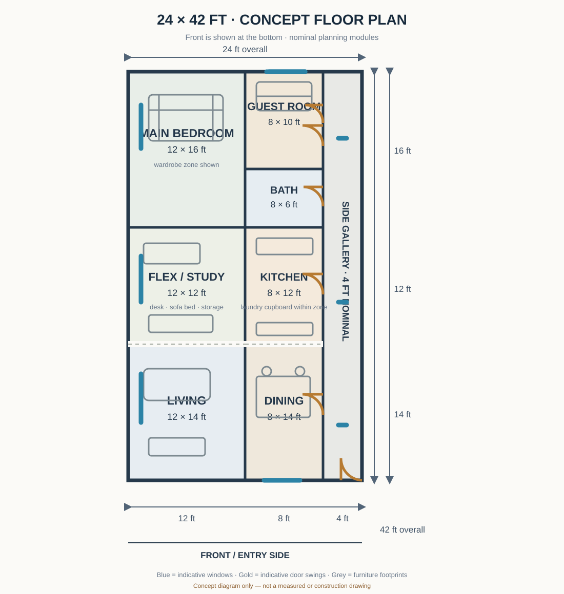

MODERN HOMES · DESIGN CONCEPT · 15 NOVEMBER 2026
24 × 42-Foot Modern Home with a Central Daylit Gallery
A compact two-bedroom home concept with a flexible study, a bright central circulation gallery, separate living and dining rooms, a practical service zone and a raised clerestory roof.

1. Design brief: a narrow home organised around a bright gallery
This concept is intended for a relatively narrow plot where a straightforward rectangular footprint may be easier to organise than a home with several projecting wings. Instead of a central courtyard open to the sky, it uses a four-foot-wide central gallery as the main circulation spine. Every principal room has a door to this gallery, so family members can reach the bedrooms, bathroom, kitchen, study and front entrance without walking through another private room.
The front zone contains separate living and dining rooms on opposite sides of the gallery. The kitchen sits directly behind the dining room, while a flexible study or occasional guest room sits behind the living room. At the rear, the main bedroom and a compact second bedroom share a bathroom reached from the central gallery. The arrangement is deliberately modest: there is no garage, large internal courtyard or ensuite bathroom in this first-stage concept.
The modern character comes from proportion and daylight rather than decorative complexity: a raised clerestory roof over the central gallery, simple wall planes, a sheltered front entrance, controlled windows on the outer walls, and a limited palette of light render, timber-look accents and dark window frames. These are visual choices, not a claim that one façade treatment will suit every climate or budget.
2. Overall dimensions and room schedule
The nominal main grid is 24 feet wide by 42 feet deep, giving 1,008 square feet before wall adjustments. A separate 6 × 8-foot covered entry porch could add approximately 48 square feet if the site and local rules allow it; it is not included in the 1,008-square-foot grid. The plan labels the front side at the bottom of the diagrams only to make the drawings readable. Rotate the arrangement to suit the actual road, sun path, prevailing wind, views and neighbouring privacy conditions.
| Space | Nominal planning module | Practical planning notes |
|---|---|---|
| Living room | 10 × 14 ft | Compact sofa group and media wall; check sofa depth and the route from the gallery door. |
| Dining room | 10 × 14 ft | Beside the kitchen; test table size and chair pull-back space. |
| Kitchen | 10 × 12 ft | Can suit an L-shaped or compact galley layout; a 3 × 5-foot laundry cupboard is shown within this zone. |
| Flex / study | 10 × 12 ft | Can become a home office, hobby room or occasional guest space; test the sofa bed when fully opened. |
| Main bedroom | 10 × 16 ft | Can accommodate a double or carefully selected queen-size bed concept, bedside storage and a wardrobe wall. |
| Guest bedroom | 10 × 10 ft | Works best with a single bed or carefully selected small double; verify furniture footprints before choosing a larger bed. |
| Shared bathroom | 10 × 6 ft | Compact shower, WC and basin arrangement; fixture sizes, door swing, ventilation and access need detailed checking. |
| Central gallery | 4 × 42 ft nominal strip | Continuous circulation spine with a raised clerestory above; finished clear width will be less than the nominal module. |
The room modules plus the gallery equal the 24 × 42-foot planning grid. That arithmetic is a useful early check, not a measured bill of areas. Once wall thicknesses and construction tolerances are introduced, the clear dimensions and usable floor area will change. A designer should redraw the plan at scale before furniture, doors or fittings are purchased.
3. Conceptual 2D floor plan

The gallery runs from the front entrance to the rear and provides access to every main room. The living and dining rooms sit at the front, with the flex room and kitchen behind them. The flex room can connect directly to the living room through a wide internal opening; the kitchen can connect directly to dining. These openings make the plan feel more connected while preserving the central gallery as a clear route to the private rooms.
The kitchen, laundry cupboard and bathroom are kept on the same general service side of the plan where possible, which can simplify early plumbing coordination. This does not determine the final pipe route or drain fall; those depend on the actual site levels, fixture positions and local service requirements. The bathroom is reached from the gallery rather than through a bedroom, so it can serve the household and visitors.
4. Doors, windows and circulation
Indicative door locations
- Main entrance: at the front end of the central gallery, with a possible 6 × 8-foot covered porch outside the main grid.
- Living and dining: each has a direct gallery door. Wide internal openings can connect living to the flex room and dining to the kitchen.
- Bedrooms: the main and guest bedrooms open from the gallery, keeping the sleeping areas separate from the living spaces.
- Bathroom: the bathroom door opens from the gallery. A pocket or outward-opening door may reduce fixture conflicts, but the selected hardware and clear opening need local review.
- Kitchen and study: both have direct gallery access as well as their planned connection to the adjacent public room.
Window and daylight strategy
The front façade uses separate living and dining windows. The west-side openings bring daylight into the living room, flex room and main bedroom. East-side windows serve the dining room, kitchen and guest room, while the bathroom receives a high-level privacy opening. The central gallery is lit from above by a raised clerestory strip. This reduces reliance on borrowed light from bedrooms and keeps the central route visually legible.
Window sizes and positions should be adjusted after checking the actual sun path, rain direction, prevailing breeze, nearby buildings, privacy and security. Larger glazing is not automatically better: it can increase heat gain, glare, cleaning and replacement costs. External shading, operable louvres, insect screens and suitable glass should be selected for the local climate.
Circulation checks before fixing furniture
- Draw the actual bed, wardrobe, sofa, dining table, refrigerator and kitchen appliance footprints to scale.
- Check that every door can open without striking a bed, cupboard, sanitary fitting or another door.
- Keep the four-foot gallery free of deep furniture; a shallow wall shelf is easier to accommodate than a full-depth cabinet.
- Test dining chairs in their pulled-out position, not only when tucked under the table.
- Confirm that the guest room can be used with the chosen bed and wardrobe rather than relying on the nominal room label alone.
5. Furnished 3D / axonometric view
The axonometric view removes the roof so the central gallery and rooms on both sides can be understood at a glance. The main bedroom and guest room occupy the rear zone. The study and kitchen form the middle zone, and the living and dining rooms sit toward the entrance. Furniture blocks are illustrative footprints only; their dimensions must be replaced with the actual products selected by the household.
For a more detailed 3D model, the designer should use the same wall positions, opening locations, ceiling heights, roof section and furniture schedule as the final measured 2D drawing. A 3D model that changes the location of a window or moves a bathroom wall is a different design, not a matching view of this plan.
6. Raised clerestory roof concept and rainwater planning

A raised clerestory strip above the central gallery gives the home a recognisable modern roof profile and introduces daylight into the middle of the plan. Two roof planes fall outward from the raised central zone toward the west and east eaves. This concept keeps the main roof geometry legible and avoids a complicated arrangement of multiple small valleys.
The roof diagram is not a structural design. The required pitch, span, framing material, member sizes, bracing, connections, wind uplift resistance, corrosion protection, insulation, condensation control, flashing, gutter capacity, overflow path and downpipe positions must be calculated and detailed by qualified professionals for the actual site. The raised clerestory needs reliable weatherproofing and safe maintenance access. The roof covering manufacturer's requirements and local rainfall conditions matter.
7. Front, side and rear exterior concepts

Front elevation
The front façade places the entrance near the centre of the building, aligned with the gallery. A simple covered porch can make the door easier to identify and provide shade from rain. Living and dining windows sit on either side of the entrance. A raised roof monitor is visible above the central circulation zone, giving the façade a modern focal point without requiring an elaborate front projection.
West side elevation
The west side can use carefully shaded windows for the living room, study and main bedroom. If this side receives strong afternoon sun, external fins, a veranda, planting or reduced glazing may be preferable to large unshaded windows. The clerestory glazing should be protected from direct rain and glare and should be designed for safe cleaning.
Rear elevation
The rear wall has openings for the main bedroom and guest room. The bathroom receives a smaller high-level privacy opening on its side wall. The final façade should preserve privacy from adjacent properties and allow safe maintenance access. A modest rear service or planting strip may be considered if the plot has enough space.
East side elevation
The east side serves the dining room, kitchen and guest room. Window placement should be coordinated with neighbouring boundaries, cooking ventilation and rain protection. Use durable sill and frame details that can be maintained without damaging the wall finish.
8. Interior character and finish selection

A restrained palette can help the compact home feel coherent. Consider warm white or pale neutral walls, a matte easy-care floor finish, timber-look joinery for selected storage, and a limited dark finish for window frames and hardware. Use a more durable, moisture-appropriate finish in the kitchen and bathroom than in dry living areas. A small number of repeated materials is usually easier to maintain than a different finish in every room.
The central gallery can use a simple durable floor, warm wall lighting and a limited number of shallow storage elements. Keep the route visually clear and avoid tall cabinets that block the clerestory daylight. In the living room, keep the sofa and media wall proportionate to the 10 × 14-foot module. In the dining room, choose a table that leaves enough space to pull out chairs. In the flex room, built-in shelving can use wall height without taking up the centre of the floor.
The kitchen can use an L-shaped or compact galley arrangement. Put the sink, preparation surface and cooking area in a logical sequence, then confirm appliance ventilation, refrigerator door swing, worktop depth and safe clearances with the kitchen supplier. The laundry cupboard shown within the kitchen should have appropriate ventilation, drainage, power and access for maintenance.
9. Electrical, lighting and plumbing coordination
Electrical and lighting considerations
- Plan general lighting for the gallery, living, dining, kitchen, study and bedrooms separately so the household can use only the zones needed.
- Use task lighting at the kitchen worktop, study desk, bathroom mirror and wardrobe area.
- Consider controlled daylight and glare from the clerestory; the roof glazing may need shading or diffusing material.
- Locate switches where they can be reached naturally from each room entrance, and check that door swings do not hide them.
- Allow for refrigerator, cooker, extractor, laundry equipment, water heating, fans, air-conditioning if required, internet equipment and exterior lighting.
- Coordinate smoke or heat detection, protective devices, earthing, cable routes and load calculations with a licensed local electrical professional.
Plumbing and drainage considerations
The kitchen, laundry cupboard and bathroom are grouped toward the same general service side of the plan where possible, making a compact service strategy possible. This is only a planning intention. A plumber or building-services designer must determine pipe sizes, gradients, venting, access panels, hot-water routes, cleanouts, rainwater disposal and the connection to the actual site services. Avoid burying valves or joints where they cannot be reached for maintenance.
10. Construction sequence: from site checks to finishing
- Site information: confirm boundaries, levels, access, easements, soil conditions, existing services, drainage paths, sun and neighbouring openings before fixing the footprint.
- Design development: have the room plan, sections, elevations, door and window schedule, roof details and service layouts coordinated by the appropriate professionals.
- Setting out and foundations: set out the approved footprint and build the foundation system specified by the structural engineer for the actual ground conditions.
- Floor base and damp protection: complete the specified sub-base, moisture protection, service sleeves and floor construction before finishes are installed.
- Walls and openings: construct the selected structural system and wall infill, checking openings, lintels, wall ties and movement details against the issued drawings.
- Roof and weatherproofing: install the engineered roof framing, roof covering, insulation, flashings, gutters and downpipes; check the completed drainage arrangement.
- First-fix services: coordinate electrical conduits, plumbing, drainage, ventilation and any cooling routes before closing walls and ceilings.
- Windows, doors and finishes: install weather-sealed openings, wet-area waterproofing, floor and wall finishes, joinery, sanitary fittings and paint systems.
- Testing and handover: check electrical protection, water pressure, drainage, ventilation, door operation, roof leaks and maintenance access with the relevant professionals.
11. Materials and an approximate cost-planning guide
No reliable total price can be stated from a concept drawing alone. The final cost depends on country and region, site access, ground conditions, structural system, labour, material specifications, taxes, professional fees, approvals, utility connections and the date of purchase. Prices also change over time. Treat the following as a scope checklist, not a quotation or a fixed cost estimate.
| Cost group | Items to measure or specify | What can change the allowance |
|---|---|---|
| Site and groundwork | Clearing, excavation, filling, retaining, temporary access and drainage. | Levels, soil, rock, water table, access and disposal distance. |
| Substructure | Engineer-designed foundations, ground beams, floor base and damp protection. | Soil report, structural loads, ground moisture and local construction method. |
| Walls and structure | Structural frame or load-bearing system, walling, lintels and finishes. | Material type, spans, wind design and labour rates. |
| Roof package | Framing, roof covering, clerestory glazing, insulation, flashings, gutters and downpipes. | Roof material, pitch, raised monitor detailing, corrosion exposure and drainage capacity. |
| Doors and windows | Frames, glass, screens, locks, weather seals and external shading. | Opening sizes, glazing specification, security and hardware quality. |
| Services | Electrical installation, plumbing, drainage, water heating, ventilation and data. | Appliance loads, service connection distance and fixture selection. |
| Interior fit-out | Flooring, paint, ceilings, kitchen joinery, wardrobes, bathroom fittings and lights. | Brand, finish, imported content, custom joinery and installation quality. |
| External works | Porch, paths, surface drainage, boundary works, planting and service yard. | Plot size, access, landscape scope and local requirements. |
Prepare a local estimate by measuring quantities from the professionally developed drawings, multiplying each quantity by current local supplier and contractor rates, and adding professional fees, permits, utility connections, site works and a clearly identified contingency. Obtain more than one comparable quotation using the same drawings and material schedule. Do not compare a shell-only price with a fully finished price.
12. Image concepts, prompts and accurate alt text
The five diagrams on this page are original SVG planning illustrations. They are not real construction photographs. If a photorealistic image set is commissioned later, use one coordinated model so that the window positions, raised clerestory, materials and room arrangement stay consistent across every view.
Photorealistic exterior prompt
Alt text: Conceptual front exterior render of a single-storey 24 × 42-foot modern home with a raised central clerestory roof, centred entrance, shaded porch and simple rendered walls.
Photorealistic interior prompt
Alt text: Conceptual central gallery interior of the 24 × 42-foot modern home, with a raised clerestory, doors on both sides, warm neutral walls and a clear circulation route.
2D plan alt text
Alt text: Schematic 24 × 42-foot modern home floor plan with living, dining, kitchen, flexible study, two bedrooms, shared bathroom and a four-foot central gallery.
Axonometric view alt text
Alt text: Open-top axonometric vector diagram showing the room sequence and indicative furniture around the central gallery of the 24 × 42-foot modern home.
Roof plan alt text
Alt text: Conceptual roof plan showing a raised central clerestory strip and two roof planes falling outward toward west and east gutters.
Elevation sheet alt text
Alt text: Diagrammatic front, west-side and rear elevation concepts for the 24 × 42-foot modern home with a raised clerestory roof and centred entrance.
13. Limitations and professional review
This article is a design exploration to help a household discuss priorities. It is not a signed architectural drawing, structural calculation, site survey, bill of quantities, electrical design, plumbing design, permit submission or legal/code-compliance statement. The nominal modules do not account for all wall build-ups, columns, ducts, construction tolerances or furniture variations. The raised clerestory roof is shown only as a visual form.
Before construction, ask qualified local professionals to verify the plot and boundary information, planning and approval requirements, accessibility and fire-safety provisions, structural system, foundation design, wind and rainfall conditions, roof drainage, electrical loads, plumbing and sanitation, ventilation, waterproofing and material suitability. The actual orientation and openings should be adapted to the site rather than copied blindly from the diagram.
14. Related DreamHome Plans guides
Frequently asked questions
Is this a ready-to-build 24 × 42-foot plan?
No. It is a preliminary concept with nominal planning modules. A local design professional must develop measured drawings and coordinate the structure, services and approvals.
Can the flex room become a third bedroom?
Potentially, but the household should test privacy, daylight, ventilation, storage, door access and the required furniture. A local professional must check any applicable room-size and opening requirements before that change is adopted.
Can the clerestory roof be replaced with a flat roof?
The exterior style can be reconsidered, but a flat or low-slope roof has different drainage, waterproofing, insulation and structural requirements. It should be redesigned rather than treated as a simple finish change.
Does the 1,008-square-foot figure include the porch?
No. It is the nominal 24 × 42-foot main grid. A separate 6 × 8-foot porch would add approximately 48 square feet of covered area if it is built and counted as proposed.
How much will the house cost?
The concept does not support a dependable price. Use a measured professional drawing set, a clear finish schedule and current local quotations to prepare an approximate project budget.